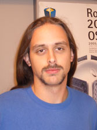

|
Data scientist and lifelong learner Experience in computer vision, machine learning, Python, Matlab, C#, C, C++ ExperienceLead Data Scientist at Partnerize (September 2018 - present) Lead Data Scientist at Department for Work and Pensions (October 2017 - September 2018) Data Scientist at SolarWinds (May 2016 - October 2017) Data Scientist at XACT PCB (June 2015 - May 2016) KTP associate at Newcastle University (June 2013 - June 2015) Full-time Associate Lecturer at University of Alicante (September 2004 - June 2013)
Contact Informationemail: pablosuau AT gmail DOT com |  Latest update: November 2018 |